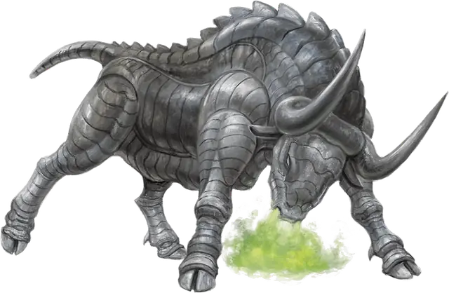

Горгона
Gorgon
Большой Конструкт, без мировоззрения

Класс Защиты 19 Инициатива +0 (10)
Хиты 114 (12к10 + 48)
Скорость 40 футов
| мод | спас | ||
|---|---|---|---|
| СИЛ | 20 | +5 | +5 |
| ЛОВ | 11 | +0 | +0 |
| ТЕЛ | 18 | +4 | +4 |
| мод | спас | ||
|---|---|---|---|
| ИНТ | 2 | −4 | −4 |
| МДР | 12 | +1 | +1 |
| ХАР | 7 | −2 | −2 |
Иммунитеты Истощение, Окаменевший
Чувства Тёмное зрение 60 футов, пассивное Восприятие 17
Языки нет
Опасность 5 (1 800 опыта; БВ +3)
Действия
Бодание. Бросок рукопашной атаки: +8, досягаемость 5 фт. Попадание: 18 (2к12 + 5) Колющего урона. Если цель — существо Большого размера или меньше, а горгона переместилась к ней по прямой хотя бы на 20 футов сразу перед попаданием, цель становится Опрокинутой.
Окаменяющее дыхание (Перезарядка 5–6). Спасбросок Телосложения: Сл 15, каждое существо в 30-футовом Конусе. Первый провал: Цель становится Опутанной и повторяет спасбросок в конце каждого своего хода, если она всё ещё Опутана, оканчивая этот эффект при успехе. Второй провал: Цель перестаёт быть Опутанной и становится Окаменевшей.
Бонусные действия
3атаптывание. Спасбросок Ловкости: Сл 16, одно Опрокинутое существо в 5 футах. Провал: 16 (2к10 + 5) Дробящего урона. Успех: Только половина урона.
Бонус мастерства +3
Среда обитания Леса, Луга, Холмы
Сокровища Любые
Горгоны
Быкоподобные стражи с окаменяющим дыханием
Горгоны — правдоподобно выполненные автоматы, похожие на закованных в железную броню быков и готовые уничтожить любого нарушителя на их территории. В дополнение к своим смертоносным рогами и железным копытам они могут испускать клубы ядовитого газа.
Маги используют горгон в качестве стражей. Процесс их изготовления труден и опасен: для создания одного экземпляра требуется скелет быка, кровь медузы и мозг василиска, которые нужно заключить в оболочку из зачарованного железа. Если что-то пойдёт не так, компоненты начнут выделять опасный магический окаменяющий газ, который может быстро заполнить помещение и остаться там на много лет.
Как правило, при создании горгон маги накладывают на них чары, заставляющие игнорировать любое существо с особым ключом управления, таким как пароль или специальный сигнал.
Охраняющее область чудовище будет нападать на нарушителей, пока те не убегут либо не будут уничтожены. Но если кто-то из них воспользуется ключом управления, горгона будет игнорировать этого незваного гостя, пока тот находится в поле её зрения. Однако, если злоумышленник скроется из виду, а затем вернётся и не воспользуется ключом управления, чудовище нападёт на него. Пробравшиеся на территорию горгоны существа должны быть бдительны и знать её точное местоположение, иначе рискуют нарваться на чудовище, которое, по их мнению, больше не представляет угрозы.
Создатели горгон стараются использовать намерено сложные ключи управления. Подсказки к ним можно найти среди записей творца или в области, которую защищает чудовище; а возможно, это последняя запись, что успел нацарапать окаменевший нарушитель. Совершите бросок по таблице «Ключ управления горгоной» для вдохновения или выберите сами слово или сигнал, который временно нейтрализует горгону.
Ключ управления горгоной
| 1к6 | Горгона не будет атаковать тех, кто... |
| 1 | Сотворит особое заклинание в её присутствии. |
| 2 | Повернётся к ней спиной или иным образом будет делать вид, что не замечает чудовище. |
| 3 | Предложит её испить крови, вина или воды. |
| 4 | Процитирует определённый стих или споёт нужную песню. |
| 5 | Произнесёт имя её создателя наоборот. |
| 6 | Носит маску быка или другого животного, имевшего значение для её создателя. |
Большинство горгон похожи на железных быков, окутанных клубами окаменяющего газа. Их металлические пластины различаются блеском и цветом — от гладких и серебристых до шершавых и чёрных. Самые древние из горгон могут быть покрыты ржавчиной, но это нисколько не влияет на их работоспособность. Места обитания этих чудовищ усеяны осколками их окаменевших противников. Многие горгоны переживают своих создателей на столетия, и некоторые исследователи ошибочно полагают, что создания родились в естественных природных условиях.
Большинство таких горгон продолжают следовать древним приказам и охранять давно опустевшие места.